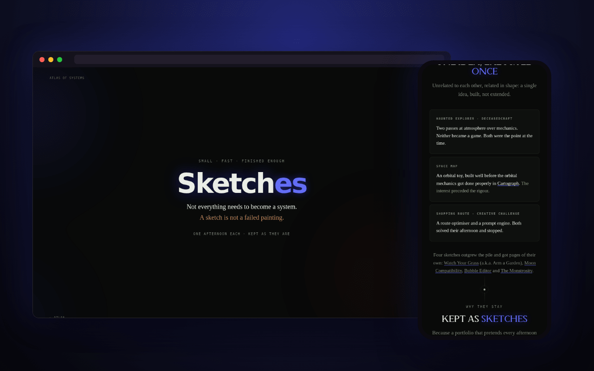

Haunted Explorer · Deceasedcraft
Two passes at atmosphere over mechanics. Neither became a game. Both were the point at the time.
Not everything needs to become a system. Small builds, finished the day they were started, and kept as sketches. A sketch is not a failed painting.

Small builds that were finished the day they were started. They're listed as sketches so they stop reading as unfinished obligations, which is what happens to anything kept in a folder called “misc”.
Two passes at atmosphere over mechanics. Neither became a game. Both were the point at the time.
An orbital toy, built well before the orbital mechanics got done properly in Cartograph. The interest preceded the rigour.
A route optimiser and a prompt engine. Both solved their afternoon and stopped.
Four sketches outgrew the pile and got pages of their own: Watch Your Grass (now a full game), Moon Compatibility, Bubble Editor and The Monstrosity.
They are not unfinished. They are done.
more in play